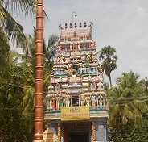
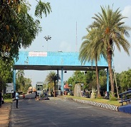
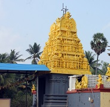
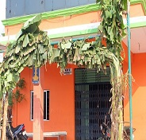
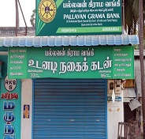
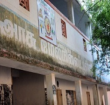

Anumanthai
Anumanthai is a village panchayat located in the Marakkanam Taluk, Villupuram District,
Tamil Nadu,India.
It is well connected to the state capital Chennai and the nearby union territory of
Puducherry by the East Coast Road.

Etymology
In earlier , village was named Hanumaan Adi. i.e“The Lord Hanumaan leg(patham)”
was kept in the Village.And later it named as "Anumanthai".

Economy
The majority of the people in Anumanthai are involved in agriculture. Crops grown in the village include
Paddy, groundnut, and a few other pulses.
Population
According to Census 2011,Anumanthai has total 1547 families residing. The anumanthai village has
population of 6539 of which 3249 are males while 3290 are females.
anumanthai include sub- villages such as Anumanthai Kuppam, Kaliyankuppam, Aathikuppam.

Festivals
anumanthai is very famous for SriAngalaAmman temple festival which is celebrated every year in the month
of March or April i.e. in Tamil month Panguni.
AngalaAmman temple is located at the center of the village. In the period of 9 to 10 days ,festival was celebrated in the
summer, Also, decorated god statues are taken around the village during every night .At the end of festival, chariots and
mayanaa kollai is celebrated, where more than 5000 people workships god.

Facilities
anumanthai has a Primary Health Centre .The Centre is available from 9 am to 1 pm. For urgent treatments, people reach out to hospitals in PIMS (Kanapathichettikulam).
anumanthai has a marriage hall named N.M.V Thirumana Nilayam and G.R.P Thirumana Nilayam .

Bank
TamilNadu Grama Bank helps inhabitants of anumanthai to save money and also offers loans for gold and
agriculture etc.
SBI ATM is located in ECR Road , which is very helpful for the inhabitants to withdraw cash whenever it required.
Co-operative bank lends the farmers with agricultural loans, helping farmers to get fertilizers and pesticides
at reduced rates etc.

Schools
According to the census 2011,Literacy rate in anumanthai is 78.47%
The government higher secondary school was started in the year 1962 and running successfully.
The school consists of two blocks i.e Primary (1 to 5th) and Secondary (6 to 12th ) . Mode of education in the school is Tamil
and English(upto 9th std) *( 2019)